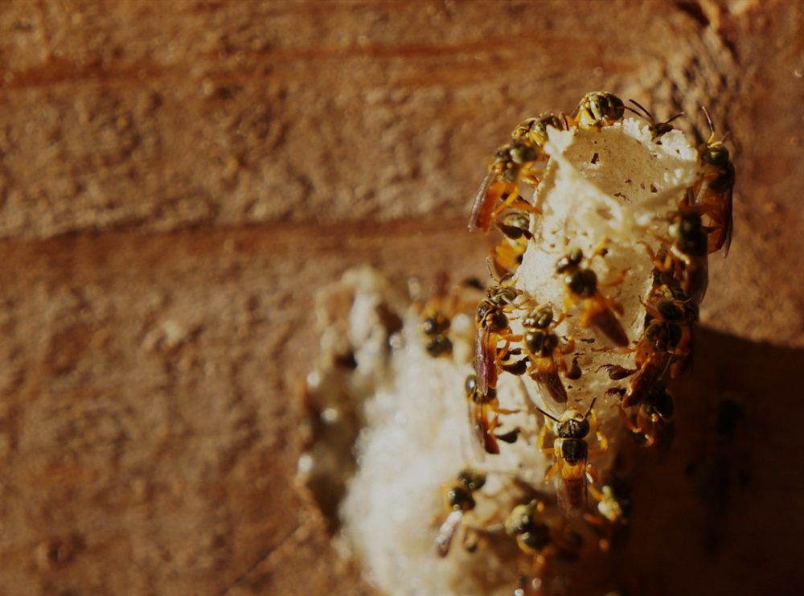
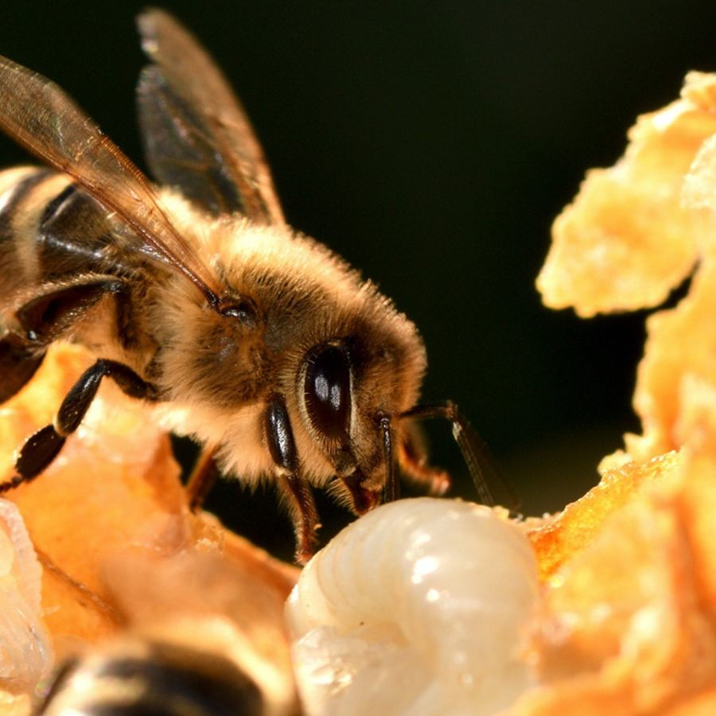
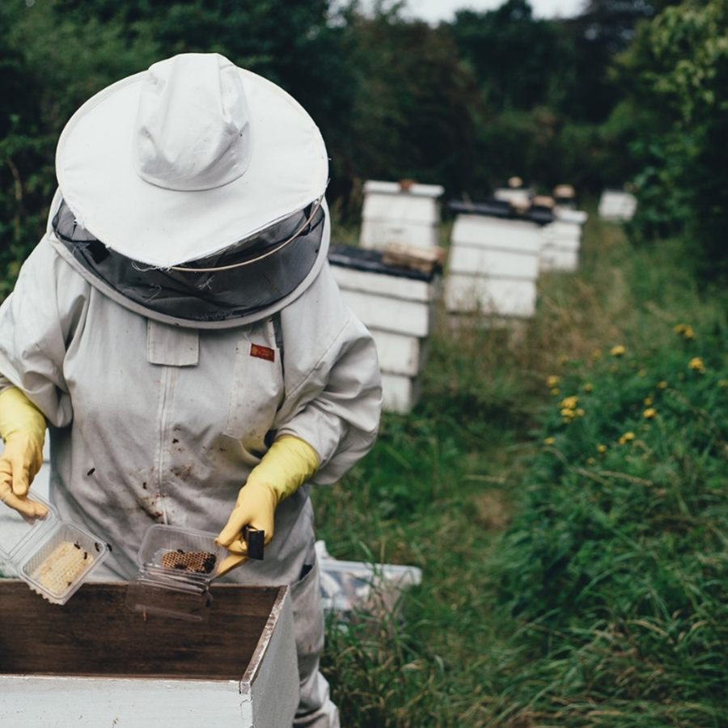

Mel puro, sem adição de nada Não contém glúten Espécie e lote no rótulo Meliponário próprio Envio para todo o Brasil
Duas formas de usar
Na gastronomia e no cuidado diário.
O mel de abelhas sem ferrão, um tesouro da biodiversidade brasileira, transcende a simples doçura: um ingrediente sofisticado para a gastronomia e um aliado natural para o cuidado diário.
Na gastronomia
Cinco perfis de sabor diferentes, cada um com o seu lugar à mesa.
Puro, na colher, à temperatura ambiente
Com queijos frescos e curados, pães de fermentação natural
Em drinques e infusões — o ácido substitui o limão
Finalizando carnes, saladas e sobremesas cítricas
No cuidado diário
O uso tradicional que atravessou gerações de famílias e comunidades indígenas.
Uma colher pela manhã, como hábito
Garganta e vias respiratórias no tempo frio
Extrato de própolis diluído em água ou direto na colher
Própolis de abelha sem ferrão: resina de espécies nativas
Apesar de haver comprovação científica, consulte seu profissional de saúde para uma indicação terapêutica do produto. Mel não deve ser oferecido a crianças com menos de 1 ano.
A mesa de degustação
Escolha o seu mel, descubra seu perfil sensorial favorito.
—200 g · vidro
A linha completa
Os cinco méis da casa.
Extrato de própolis
A resina que a abelha usa para proteger a colônia.
Abelha sem ferrão não produz o própolis verde que você conhece. Cada espécie coleta resinas diferentes da mata e produz um extrato com cor, aroma e caráter próprios. Em frascos de 30 ml e 20 ml, com conta-gotas.
A pergunta que todo mundo faz
Por que nosso mel é diferente dos demais?
Não é posicionamento de marca. É aritmética de colmeia. Uma colônia de abelha sem ferrão produz, num ano inteiro, o que uma caixa de Apis mellifera produz em algumas semanas — e a colheita é feita pote a pote, com seringa, sem espremer nada.
Comparação entre abelha sem ferrão (nativa) e abelha com ferrão (Apis mellifera)
Abelha sem ferrão
Abelha com ferrão
Produção por colônia, por ano
1 a 3 litros
20 a 60 litros
Como se colhe
Sucção pote a pote, com seringa ou bomba
Centrifugação de quadros inteiros
Multiplicação de colônias
Em geral uma divisão por ano
Várias divisões e enxameações por safra
Umidade natural do mel
Mais alta — exige maturação e cuidado
Mais baixa — estável em prateleira
Conservação
Refrigerado ou maturado, validade curta após aberto
Temperatura ambiente
Manejo
Sem fumaça, sem traje, colônia a colônia
Fumigador e equipamento de proteção
Diversidade de sabor
Muda a cada espécie de abelha
Muda conforme a florada
Do meliponário ao pote
Como este mel é produzido.
Manejo da colônia
Revisão caixa por caixa, sem fumaça e sem traje. Avaliação de postura da rainha, reservas de pólen e sanidade antes de qualquer colheita.
Maturação nos potes
A abelha desidrata o néctar e fecha o pote de cerume. Só se colhe depois disso — mel de pote aberto ainda não é mel.
Colheita por sucção
Pote a pote, com seringa ou bomba a vácuo. Nada é espremido, nada é misturado: cada colheita é de uma espécie só.
Maturação e umidade
Controle de umidade em ambiente fechado, para estabilizar o mel sem pasteurizar e sem descaracterizar o sabor.
Envase e lote
Vidro de 200 g, rótulo com espécie, nome científico, data de envase e lote. Cada pote volta ao meliponário de origem no papel.



Envase e rotulagem foto a produzir
Retrato do Ricardo no meliponário
Quem produz
Ricardo, meliponicultor.
Ricardo cria abelhas nativas sem ferrão em Joinville, no norte de Santa Catarina, e conduz sozinho todas as etapas: manejo das colônias, colheita, maturação e envase. Não compra mel de terceiros e não mistura espécies — o que sai do meliponário é o que entra no pote.
Além de produzir, ele estuda. Está em formação em análise sensorial e físico-química de mel e em sommelier de mel — as duas coisas que permitem descrever um mel do jeito que se descreve um vinho: cor, viscosidade, aroma, acidez, corpo e retrogosto.
Sommelier de melFormação em análise sensorial: identificar e descrever o que diferencia cada mel.
Análise de melEstudo dos parâmetros de qualidade: umidade, açúcares, acidez e conservação.
Cursos, workshops e consultoriaFormação de novos meliponicultores e assessoria para quem quer montar meliponário.
Meliponário próprioColônias de jataí, mandaçaia, guaraipo, bugia, canudo e tubuna sob manejo direto.